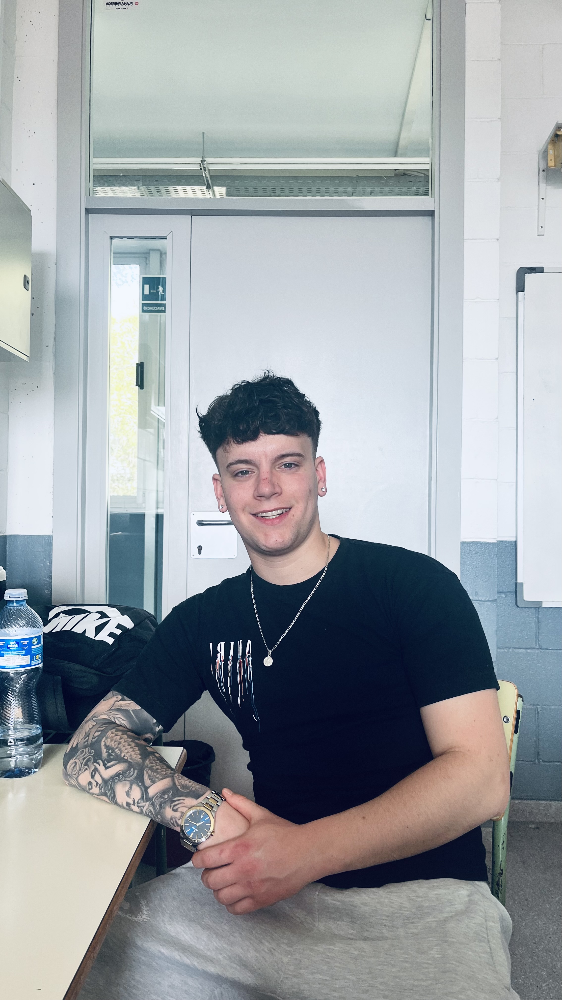

Presentació
Em dic Pau Gonzalez i estic cursant un cicle mitjà de MicroInformàtica. Em considero una persona sociable, amb facilitat per treballar en equip i per crear un bon ambient amb les persones que m'envolten..
Parlant ja mes del hámbit escolar, el que m'agrada i em vull dedicar en un futur es a la ciberseguretat d'empreses, encare que aquet any no hem tocat molt el tema.

Coses que he après aquest curs
- A configurar i gestionar pagines web.
- A identificar diferent problemes del hardware i software d'un ordinador i a solucionar-los.
- A treballar amb diferents eines de programació.
- A comprendre els conceptes bàsics de la digitalització en les empreses.